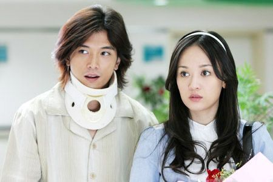
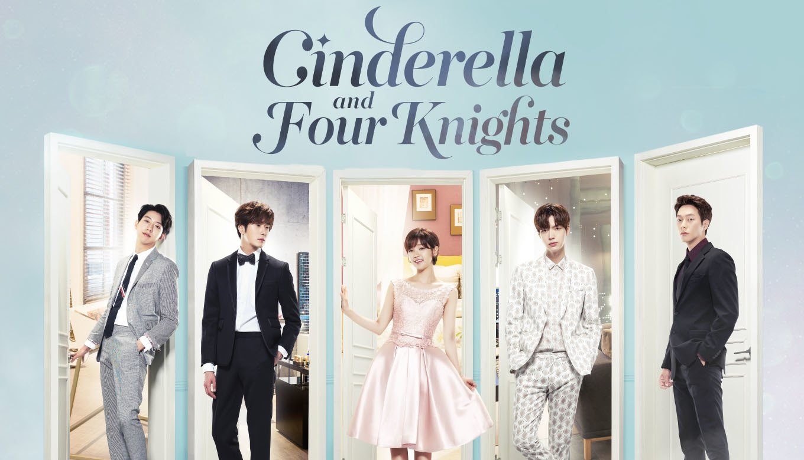

BIENVENIDOS A NUESTRO CLUB
Donde podrás encontrar las mejores recomendaciones en cuestión de dramas asiáticos
Lo último de nuestro blog
Hwayugi: The Korean Odyssey
Boys Over Flowers
Hay muchos doramas que son muy bonitos, los que recomiendo ver son:

Amor Azul
